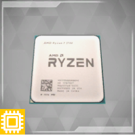

|
Home |
PC-Kompunenten |
Doku |
Quiz |
|

|

|

|

|

|

|

|

|
Was ist eine Grafikarte ?
Eine Grafikkarte (auch Grafikprozessoreinheit oder GPU, Graphics Processing Unit) ist eine spezialisierte Hardwarekomponente, die darauf ausgelegt ist, grafische Berechnungen für die Darstellung von Bildern und Videos auf einem Computermonitor oder einem anderen Anzeigegerät durchzuführen. Hier sind die wichtigsten Komponenten und Funktionen einer Grafikkarte im Detail:
GPU (Graphics Processing Unit):
Die GPU ist das Herzstück einer Grafikkarte. Sie ist ein spezialisierter Prozessor, der für die Durchführung von Berechnungen im Zusammenhang mit Grafiken und Visualisierung verantwortlich ist. Im Gegensatz zu einer CPU (Central Processing Unit), die für allgemeine Aufgaben zuständig ist, ist die GPU darauf optimiert, viele gleichartige Berechnungen gleichzeitig durchzuführen, was für Grafikaufgaben besonders wichtig ist.
Video-RAM (VRAM):
Dies ist der spezielle Arbeitsspeicher auf der Grafikkarte, der für die kurzfristige Speicherung von Grafikdaten verwendet wird. Je mehr VRAM eine Grafikkarte hat, desto mehr Textur- und Bilddaten kann sie gleichzeitig verarbeiten, was sich positiv auf die Leistung bei anspruchsvollen Grafikanwendungen und Spielen auswirken kann.
Kühlung:
Videoausgänge:
Grafikkarten sind mit verschiedenen Videoausgängen ausgestattet, um das Bildsignal an externe Anzeigegeräte wie Monitore oder Fernseher zu übertragen. Gängige Ausgänge sind HDMI, DisplayPort und DVI.
Shader:
Shader sind spezielle Programme, die von der GPU ausgeführt werden, um die grafischen Effekte und Berechnungen durchzuführen. Sie spielen eine entscheidende Rolle bei der Darstellung von Licht, Schatten, Texturen und anderen visuellen Effekten in Spielen und Anwendungen.
Treiber:
Grafikkarten benötigen spezielle Software, sogenannte Treiber, um mit dem Betriebssystem und den Anwendungen richtig zu kommunizieren. Diese Treiber werden regelmäßig aktualisiert, um die Leistung zu verbessern und Kompatibilität mit neuen Softwareversionen sicherzustellen.
Grafikkarten sind entscheidend für anspruchsvolle grafische Aufgaben wie 3D-Spiele, Videobearbeitung, Computer-Aided Design (CAD) und andere grafikintensive Anwendungen. Die Entwicklung von leistungsfähigeren Grafikkarten hat dazu beigetragen, die Grafikqualität und die Gesamtleistung von Computern erheblich zu verbessern.